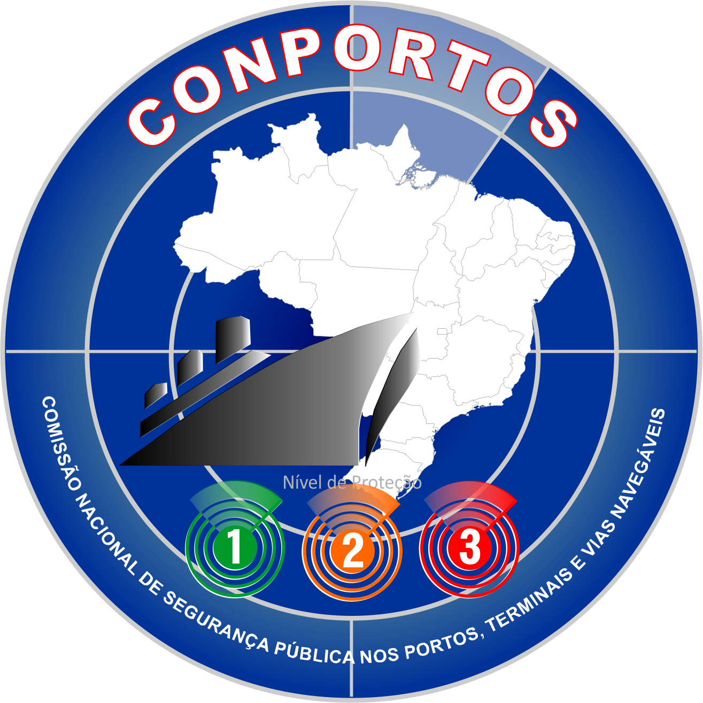

Comissão Nacional de Segurança Pública nos Portos, Terminais e Vias Navegáveis
INTELIGÊNCIA

CONPORTOS
Segurança PortuáriaApresentação
Comissão responsável por coordenar ações para a segurança portuária em portos, terminais e vias navegáveis do país.
Composição
Integrada por representantes da Marinha, Polícia Federal, ANTAQ e outras entidades atuantes no setor.
Objetivos
Desenvolver políticas e diretrizes de segurança; garantir a proteção das infraestruturas portuárias; e contribuir para o comércio e a segurança nacional.
Trilha Técnica da Fiscalização · SFC / GPF — ANTAQ
53 / 61